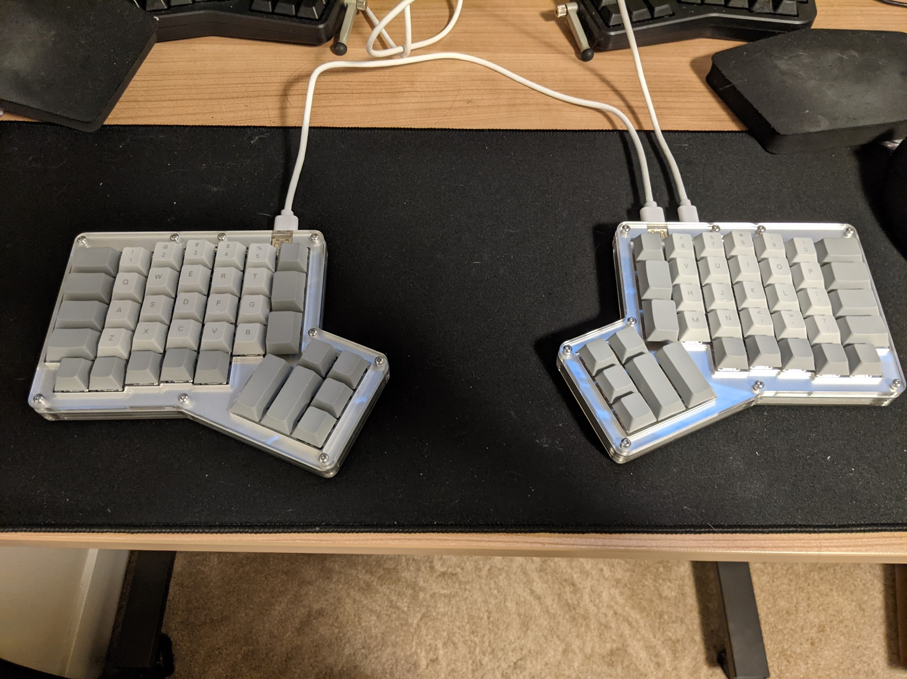

The Quietest Mechanical Keyboard
Prologue: getting muted in a a video conference #
As is the trend for many since 2020, I am working remote, and as a result in a lot of video conferences.
One silver lining with being remote is the ability to take notes: by nature of video conference, you’re in front of the computer, so it’s a lot easier to take notes on your computer without looking like you’re not paying attention.
In one such meeting, I was notified how I was muted in the middle while someone else was talking: it turns out my keyboard noise was quite audible! How embarassing.
So thus started the quest to find the quietest keyboard possible.
What’s causing the noise when I type? #
For context: I use an ergodox-ez. I didn’t realize it, but loud noise with the Ergodox EZ is a common issue.
On the ergodox-ez page, there is a lot of discussion around keyswitches (the thing that detects the key being pressed) and how much they affect noise. I chose the Cherry MX Browns since they are made to be silent, but still provide a tactile feel.
But after experimenting with different keyboards, removing some pieces, and changing my style, I’ve found that keyswitches are just one piece of the puzzle. The additional factors I found were:
- keycaps: the cap you put on the key switches. Once you put the keycap on, the clacking becomes louder, seemingly due to the resonation of the keys to the bottom of the switch.
- keyboard housing: the reverberation that occurs in the housing can be significant. This occurs while the key is being pressed, and even once it’s released.
When holding a decibel meter up to where my microphone is during calls, and when typing a single key in a rhythmic fashion, I found that my ErgoDox produces noise of 62.8 decibels (dB) of loudness. My voice talking normally (and also much closer to the mic) is roughly 72 dB.
To be silent for practical purposes, the keyboard would have to produce below 40dB of noise: that’s roughly the loudness of a library.
Keyboard components in depth #
Keycaps #
As mentioned previously, keycaps are the cover for a key, and is often marked with the key that would be typed if pressed. A little research shows that PBT plastic dampens higher frequencies. These seemed to be loud in my case.
O-rings #
If your keypresses are loud, it’s common to just add o-rings (plastic rings that wrap the stem of your keycap) rather than brand by new switches. I’ve found the use of o-rings to be hit or miss, but generally they do play a part in reducing the noise of your keypresses, at the cost of the “feel” of your keys (the press feels a little squish at the bottom due to the ring being compressed rather than hitting whatever bottom it normally does).
Key switches #
Key Switches are the mechanical components which are responsible for “actuation”, in other words registering a key press.
There are a few general properties that can be used to categorize switches:
Clicky or silent #
If the switch is clicky, then the actuation includes a purposeful “click” sound. The click is actually not necessary to register the key press.
Tactile or linear #
For silent switches, tactile switches include physical feedback when the key is actuated. You feel a little resistance, and once that gives way you know you’ve pressed the button.
With a linear switch, the resistance is the same all the way through, which doesn’t give you a way to physically determine when the press was made.
Travel distance #
The distance the switch travels between pressed and unpressed. Typically a few millimeters.
Actuation force #
The total amount of force that must be applied to actuate the switch. The key will feel harder to press if the actuation force is higher.
My Conclusion on Switches #
I chose a switch with:
- highest possible actuation force and travel distance. I tend to hit keys quite hard, and to minimize sound I need to try to actuate the key, but not actually “bottom out” and have my switch hit the bottom.
- Silent and linear attributes. Silent since the whole goal is to not make sound, and I found through testing that silent tactile switches result in additional noise when you hit the tactile feedback. The linear has no such noise.
For the switch brand themselves, I found that Cherry MX, Gateron, and Kailh brand switches made roughly the same amount of noise. However, the ZealPC Healios were orders of magnitude quieter in my HotDox. I’m not sure on exactly why, but it was impressive. Combined with the fact that they were linear switches, the Healios were the winner.
Keyboard housing #
The keyboard housing played a big part, based on my experiments (details below).
Housings that had less air inside produced less noise, since there wasn’t space for reverberation and the force of the keypress was more dampened by the material the keybaord was on.
Based on reviews, I read that the Hot Dox keyboard was very silent (acrylic case with very little empty space inside). To further reduce any chance of reverberation, I added some EVA foam to fill the space between the PCB and the metallic cover on top.
There is also a material called Sorbothane that dampens things even better than foam, but I didn’t go that route because it would require hand-cutting it, and the material is hard to cut. If I tried to cut it without special equipment, I would probably end up with a rather uneven and unpleasent look.
Material keyboard is on #
I also found that the material the keyboard is on made a difference, although of a couple decibels. Typing on hard wood was louder. I read that using a keyboard / mousepad mat and putting your keyboard on top helps, so I purchased a cheap one on Amazon.
Experiments with different scenarios #
To verify what I read, I tried to take some measurements with the loudness of various keyboards and configurations.
Although I originally tried to test the various scenarios with a decibel app on my phone, I found that the sensitivity wasn’t good enough to capture even relative differences between the different configurations. So I purchased a real decibel meter.
To measure the volume, I hovered the decibel meter about 3cm directly above the key being pressed. I pressed with the same rhythm, setting the decibel to “max” setting to capture the loudest the keypress ever is.
All experiments were with PBT Keycaps.
| Volume | Keyboard Model | Switches | With o-ring? | With Mat? |
|---|---|---|---|---|
| 72.9 dB | ErgoDox | Cherry MX Brown | no | no |
| 69.2 dB | ErgoDox | Cherry MX Brown | no | yes |
| 62 dB | HotDox | Gateron Whites | no | yes |
| 61.5 dB | ErgoDox | Helios | no | yes |
| 57.5 dB | HotDox | Helios | yes | yes |
| 53.9 dB | HP Spectre X360 Keyboard | n/a (built-in scissor) | n/a | yes |
| 52.9 dB | HotDox | Helios | no | yes |
Conclusion #
I started with a keyboard that was very loud (72.9 decibels), and was able to finish with a setup that was roughly 20dB quieter! Although the real noise reduction may be lower due to the microphone being more than 3cm away from the keyboard, the relative comparison is going from a noisy restaurant (70db) to a quiet office (50db).
My final build is:
- PBT keycaps (my particular set is no longer made, so no link)
- ZealPC Healios switches
- HotDox case + PDB
- Foam between metal slots and PCB
- XXL mousepad below keyboard

And the verdict during meetings? No one has muted me yet!